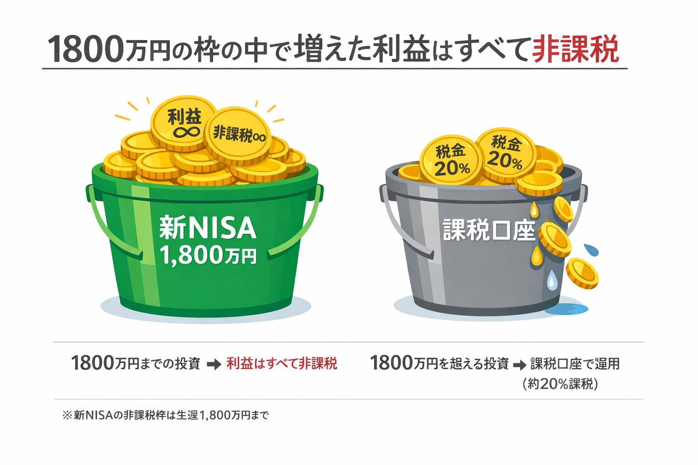
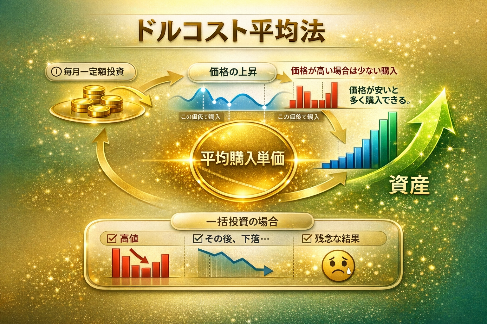

銀行に貯蓄をした場合、現在の超低金利下では資産はほとんど増えません。
むしろ物価上昇（インフレ）が続けば、お金の価値は相対的に下がり、実質的なマイナスとなってしまうリスクがあります。
ただ貯金しているだけでは資産を守れない時代です。
資産運用には様々な形がありますが、代表的な例として以下のものが挙げられます：
為替や株価の変動を利用して利益を得る、代表的な投資手法です。
「有事の金」と呼ばれ、現物資産としての守りに適しています。
家賃収入や売却益を目的とし、現物として残る実物資産投資です。
プロに運用を任せ、多くの企業へ分散投資する初心者向けの選択肢です。
これらFXや株等の投資で得られた利益には、通常 20.315% の税金が課されます。
例えば、投資で100万円の利益が出たとします。すると、203,150円（約20万円）もの税金を支払わなければなりません。
しかし、新NISA制度を利用することで、この税負担を 0円 にすることが可能です。
これは、効率的な資産形成において極めて重要な役割を果たします。

投資には特定の1社に投資する「個別株」もありますが、予測が難しくリスクも高くなります。
そのため現在は、特定の指数に連動する「インデックス投資」が主流となっています。
※インデックス投資とは
日経平均株価やS&P500といった「市場の平均値（指数）」と同じ値動きを目指す、分散投資の王道手法のことです。
| 投資事例 | 範囲 | 期待役割 | 過去10年の年利 |
|---|---|---|---|
| オルカン | 世界約2,800社 | 究極の分散 | 約12.8% |
| S&P500 | 米国主要500社 | 安定成長 | 約16.3% |
| NYSE FANG+ | 米国精鋭10社 | 高い成長期待 | 約28.0%以上 |
銀行に預けた場合と比べると、実に280倍以上の差です。
にわかには信じがたい数字ですが、これは過去の実績です。
なぜこれほどのリターンが出るのでしょうか？
答えは、構成銘柄の顔ぶれを見ると一目でわかります。
あなたが毎日使っているスマートフォン、検索エンジン、動画配信、ネットショッピング。
その裏側で世界中の富を集め続けている企業たちが、このFANG+を構成しています。
※ただし、過去の実績は将来を保証するものではありません。価格変動リスクも大きいため、長期投資を前提とした余裕資金での運用をおすすめします。
FANG+指数は、世界をリードするテクノロジー企業の中でも特に革新性と成長性に優れた10社で構成されています。 これらの企業は、AI、クラウド、電気自動車、メタバースなど、未来を形作る技術分野で圧倒的な競争優位性を持っています。
従来のS&P500が500社への分散投資であるのに対し、FANG+は厳選された10社への集中投資により、 より高いリターンを狙うことができる一方で、ボラティリティ（価格変動）も大きくなります。
投資をするとき、多くの人が「いつ買えばいいか」と悩みます。
高いときに買ってしまったら損をするのでは、と。
しかし、毎月一定額を積み立てる「ドルコスト平均法」は、この悩みをまるごと解決します。
仕組みはシンプルです。

毎月同じ金額を積み立てると、価格が高いときは少ししか買えませんが、価格が安いときはたくさん買えます。
これを続けると、自然と平均購入単価が下がります。
「いつ買うか」を考える必要がない。
毎月自動で積み立てるだけで、時間が味方になっていく。
これが、ドルコスト平均法の最大のメリットです。
投資をためらう最大の理由が「暴落が怖い」という不安です。
確かに、過去には何度も大きな暴落がありました。
| 暴落の名称 | 時期 | 下落率 | 回復までの期間 | 教訓 |
|---|---|---|---|---|
| ITバブル崩壊 | 2000〜2002年 | 約 −49% | 約5年 | 積立継続で全額回復 |
| リーマンショック | 2008〜2009年 | 約 −57% | 約4年 | 底値で多く買えた人が最大の恩恵 |
| コロナショック | 2020年3月 | 約 −34% | わずか5ヶ月 | 積立を止めなかった人が勝者 |
注目してほしいのは「回復までの期間」です。
どんな暴落も、長期的には必ず回復しています。
特にコロナショックは、わずか5ヶ月で回復しました。
暴落時に最も損をするのは、怖くなって積立をやめた人です。
逆に最も得をするのは、暴落中も淡々と積み立て続けた人です。
なぜなら、暴落中は価格が安いため、同じ1万円でもいつもより多くの口数を買えるからです。
そして相場が回復したとき、安く買った分が大きな利益に変わります。
「やめないこと」が、最大の投資戦略です。
過去100年以上の歴史を見ると、世界の株式市場は暴落のたびに回復し、
長期的には右肩上がりを続けています。
毎月こつこつ積み立て、暴落が来たら「安く買えるチャンス」と受け止める。
それだけで、あなたの資産形成は大きく前進します。
新NISAで積み立てるだけでも十分強力ですが、OLIVEフレックスカード（三井住友銀行）とSBI証券を組み合わせることで、さらに強力な仕組みが完成します。

三井住友銀行のOLIVEフレックスカードは、銀行口座・クレジットカード・ポイントがひとつになったサービスです。
OLIVEカードをSBI証券のクレカ積立に設定します。毎月の積立がカード決済になります。
設定さえすれば、あとは何もしなくても毎月自動で積立が実行されます。入金の手間は一切不要です。
積立額に応じてVポイントが毎月貯まります。貯まったポイントは再投資にも、お買い物にも使えます。
一度仕組みを作れば、あとは自動で資産が育ち続けます。
毎月の手間はゼロ。積立もポイントも、すべてが自動で回り続けます。
| 証券会社 | クレカ | 還元率 | 向いている人 |
|---|---|---|---|
| SBI証券当サイト推奨 | 三井住友ゴールド(NL) | 1.0% | 口座数No.1の安心感・商品の豊富さを重視する方 |
| SBI証券 | 三井住友カード(NL) | 0.5% | 年会費無料で始めたい方 |
| マネックス証券 | マネックスカード | 1.1% 👑 | 還元率だけを最優先したい方 |
| 楽天証券 | 楽天カード | 0.5〜1% | 楽天市場・楽天ポイントをすでに使っている方 |
| auカブコム証券 | au PAYカード | 1.0% | auユーザー・au経済圏を使っている方 |
還元率だけを追うならマネックスカードが現状トップ（1.1%）です。
楽天経済圏をすでに使っている方には楽天証券の方が向いている場合もあります。
それでもこのサイトがSBI証券を推す理由は3つです。
国内最大手のネット証券。サポート体制・安定性ともに実績があります。
投資信託・株式・ETFなど選択肢が多く、将来的に投資の幅を広げやすい。
OLIVE・三井住友カード・SBI証券の連携はシンプルで、初心者でも迷いにくい設計です。
※ 還元率・サービス内容は変更される場合があります。最新情報は各社の公式サイトでご確認ください。
まずはSBI証券の公式サイトへアクセスし、メールアドレスを登録して認証コードを受け取ります。スマホで完結できます。
マイナンバーカードを用意し、スマホのカメラで撮影して提出します。これなら郵送不要で、最短翌営業日から取引可能です。
初期設定時に、納税方法を選択する項目があります。
必ず 「特定口座（源泉徴収あり）」 を選択してください。
※これを選べば、確定申告が原則不要になり、手間がかかりません。
口座開設後、初期設定画面で「Vポイント」などのポイントサービスを連携させます。これで投資信託の保有額に応じて毎月ポイントが貯まります。
最後に「クレジットカード積立」の設定を行います。毎月の入金手間がなくなり、ポイントも二重取りできる最もお得な方法です。